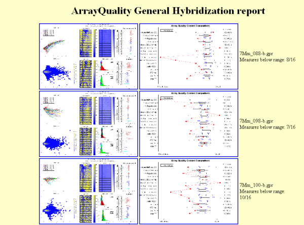

April 15, 2008
Agnes Paquet1, Andrea Barczak1, (Jean) Yee Hwa
Yang2
1. Department of Medicine, Functional Genomics Core Facility,
University of California, San Francisco
paquetagnes@yahoo.com
2. School of Mathematics and Statistics, University of Sydney, Australia
ArrayQuality is a R package, available as part of Bioconductor, designed to help assessing quality of spotted array experiments at several stages of the microarray life cycle. It provides reports containing several plots and statistical measures that can help you determine if your hybridizations and slides are of good quality. More information about Bioconductor is available at http://www.bioconductor.org.
This guide provides an introduction to microarray quality and a description of the main functionalities of the package. A full description of the package is given by the individual function help documents available from the R online help system. To access the online help, type help(package=limma) at the R prompt or else start the html help system using help.start() or the Windows drop-down help menu.
ArrayQuality is a library for the R project, part of Bioconductor. You
will need to have R installed on your computer before installing
arrayQuality. For more information about R, see the R project at http://www.r-project.org.
ArrayQuality can work on different files at the same time, ONLY
if they are from the SAME print-run (same GAL file). If you
want to generate quality reports of slides from different print-runs,
you need to place them in different folders, one for each print-run.
ArrayQuality can be installed from Bioconductor. The version from Bioconductor is updated every 6 months.
Here, we will discuss the components of the package aimed at verifying the performance of a hybridization, given the good quality of the slide, before any preprocessing steps or further quality assessment on individual spots are performed. If you are interested in the print-run or the MEEBO/HEEBO components, please refer to the appropriate help fike for these topics.
Our package provides two kinds of quality control plots:
A microarray experiment is composed of several steps, including
experimental design, sample preparation, and various statistical
analyses (figure 1). They are represented in the microarray life cycle
below. As microarray technology is complex and sensitive, it is
important to assess the performance of each step before going to the
next one. In addition, this is also a good way to trace back the cycle
to understand potential causes for upstream problems.
Figure 2: Quality Control for spotted arrays experiment
This component is aimed at verifying the
performance of
your hybridization, given the good quality of the slide, before any
preprocessing steps or further quality assessment on individual spots.
This
is where you determine if your experiment quality is good enough for you array to
enter
your dataset. For example, you will need to remove any hybridization
with
very low SNR, or large spatial artifacts.
Our package provides two kinds of quality control
plots.
The first one is a qualitative quality control measurement as a
diagnostic
plot. It is a quick visual way to determine hybridization quality
gathering
information from several statistical tools. More details on individual
diagnostic plots can be found in the vignette “marrayPlots” in
the package marray. The
second
one is a more quantitative comparison of slide quality. We extract some
statistical measures from the test slide and we compare them against
results
obtained for a collection of slides of “good quality” to assess
the quality of the hybridization. This comparison is visualized through
a
comparative boxplot. Results are displayed in a HTML report. Figure 5
shows a
screen shot of a typical HTML report. Users can click on each image to
obtain
a higher resolution plot.
Diagnostic plots can be generated for
different image processing software format: GenePix format files (.gpr
files), Spot format files (.spot) and Agilent format files, or from marrayRaw
or RGList
objects. Most arguments can also be customized to match your own data:
which probes are used as controls, which column of the image processing
output file is used
to define your spot types... You can also specify your own collection
of good quality
slides using the functions globalQuality and qualRefTable. For more
details about
these functions, please refer to the specific online help.
- Copy the gpr files from the SAME print-run (same GAL file) in a directory.
-
Change R working directory to the one containing
your
gpr files as described in Section 3
-
To generate both
diagnostic plots and comparative boxplots on all files in the
directory, run:
> result <-
gpQuality(organism=”Mm”)
-
To generate
diagnostic
plots only, run:
> result <-
gpQuality(organism="Mm", compBoxplot="FALSE")
In this case,
quantitative
quality measures will not be calculated and the HTML report will not be generated.
-
To
write down your quantitative quality
measures and your normalized data to a file: set output = TRUE when calling gpQuality:
> result <- gpQuality(organism="Mm",
output=TRUE)
This command will create two files: quality.txt, which contains your quality measures, and NormalizedData.xls, which contains your normalized M values.
If you have set compBoxplot = FALSE, quantitative quality measures are not calculated. Therefore, you will not generate the quality.txt file.
-
To
generate diagnostic plots: if rawdata is
your marrayRaw/RGList
object, type:
>
maQualityPlots(rawdata)
For each slide, you will
find
on the report how many of your slide’s results are below the
recommended range. If you want to specify a directory to store the
results,
you can do it by modifying the argument resdir accordingly.
For
more details about gpQuality arguments, please
refer to
the online help for this function.

Figure 5: Example of
HTML report generated by gpQuality
Figure 6 represents an example of a good hybridization diagnostic plot.
Figure 7 shows an example of a comparative boxplot.
We have chosen a wide range of measures to
quantify the
quality of a typical hybridization: single channel measures (range of
foreground signal, MAD of background, signal to noise ratio…), two
channel measures (median A values for each type of controls, amount of
normalization needed…), percentage of flagged spots... Some measures
have been negated such that the quality scale had an increasing trend
from
problematic to good quality.
For each measure, we have represented the
following on
the graph :
- Boxplot of the reference slides values.
- 1st and 3rd quantiles before scaling for each boxplot.
-
Y-axis on the right : for each measure, we have
printed
2 values. The first one is the percentage of reference slides measures
under
your slide’s result. The second one is your slide value for this
measure before scaling.
Unless otherwise specified:
|
|
Name |
Descriptions |
Details |
|
1 |
rangeRf |
Range of Cy5
foreground. |
max(log2 Cy5fgmedian )
– min(log2 Cy5fgmedian) . |
|
2 |
rangeGf |
Range of Cy3
foreground. |
max(log2 Cy3fgmedian )
– min(log2 Cy3fgmedian). |
|
3 |
–madRb |
MAD of Cy5
background. |
-mad(log2 Cy5bg). |
|
4 |
–madGb |
MAD of Cy3 background. |
-mad(log2 Cy3bg) . |
|
5 |
medRS2N |
Median signal to
noise log-ratio for Cy5. |
median(RS2N) with RS2N = log2(Cy5fgmean /Cy5bg ). |
|
6 |
medGS2N |
Median signal to
noise log-ratio for Cy3. |
median(GS2N) with GS2N = log2(Cy3fgmean / Cy3bg ). |
|
7 |
–medA_empty |
Median A values
of empty control. |
- median A[empty] where “empty”
refers to the set of control probes labeled "empty". |
|
8 |
–medA_negative |
Median A values
of negative control. |
- median A[negative] where “negative”
refers to the set of control probes labeled "negative". |
|
9 |
medA_positive |
Median A values
of positive control. |
- median A[positive] where “positive”
refers to the set of control probes labeled "positive". |
|
10 |
diffA_pos-neg |
Difference
between A values for positive and negative controls. |
|
|
11 |
–msePTip: |
MSE of M values
by print-tip group, no background subtraction. |
MSE = mean squared error |
|
12 |
–mseFit |
MSE of lowess
curve |
fit = lowess(A, M) |
|
13 |
–percentFlag |
Determine the percentage of spots with flag
less than 0. |
Flag is the information from the “Flags”
column of the gpr file. |
|
14 |
–madMMR |
Log-ratio of M values calculated using
mean and median. |
-[log2(Cy5fgmean / Cy3fgmean)
- log2(Cy5fgmedian / Cy3fgmedian)] |
|
15 |
–extremeMMR |
Percentage of
spots with abs[MMR] > 0.5 |
MMR as defined in measure 14. |
Data for this example was provided by the
Functional
Genomics Core Facility in UCSF. We have tested slide number "137" from
print-run "9Mm". This array was fabricated using Operon Version 2 Mouse
oligos and the hybridization measures differential gene expression in
two RNA
samples, Mouse Liver and Mouse Reference Pool. Results are represented
Figure
5 and Figure 6.
> library(arrayQuality)
> datadir <- system.file("gprQCData", package="arrayQuality")
> result <-
gpQuality(fnames = "9Mm137.gpr", path =
datadir,
Figure 7: Comparative boxplot